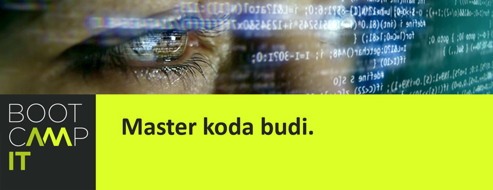
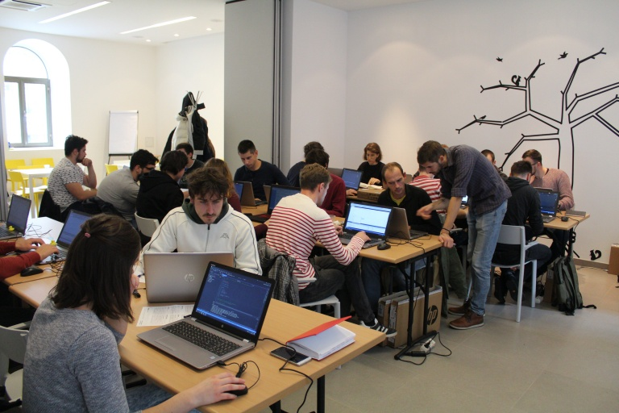

Upisi u drugi ciklus osposobljavanja za Junior Developere Bootcamp IT
Pozivamo sve zainteresirane nezaposlene osobe da se prijave na besplatno intenzivno osposobljavanje za Junior Developere u sklopu europskog projekta Bootcamp IT. Upisati se možeš ispunjavanjem prijavnice do nedjelje, 20 siječnja 2019.
Upravo je u tijeku prvi ciklus edukacije u koju je uključena 21 nezaposlena osoba. Tijekom tromjesečnog intenzivnog osposobljavanja oni će steći znanja programiranja, a krenut će od osnova prema objektno orijentiranom programiranju, JavaScriptu, Bootstrapu, jQueryju i Pythonu. Od polaznika se ne očekuje predznanje iz programiranja, već samo motivacija da se nauče sve petlje, polja i funkcije, kao i sposobnost rada u timu jer posljednjih mjesec dana polaznici zajedno u manjim grupama rješavaju zadatak iz poslovnog sektora koji će im postaviti neki od poslodavaca-mentora uključenih u projekt Bootcamp IT (njihov popis provjeri u dijelu IT tvrtke). Osim tehničkih znanja programiranja, polaznici će sudjelovati u 30 sati edukacije iz poslovnih vještina. Osposobljavanje završava Demo danom na kojem polaznici predstavljaju rješenja svojih projektnih zadataka te sudjeluju u razgovorima s poslodavcima 1 na 1. Na isti će se način, odviti i drugi ciklus osposobljavanja Bootcamp IT.
Edukacija počinje 4. ožujka 2019., a odvijat će se svakim radnim danom (pet dana u tjednu, uz stanku za uskršnje blagdane) sve do 7. lipnja 2019. Od polaznika se očekuje sudjelovanje na minimalno 80% aktivnosti. Kako to slikovito izgleda možeš provjeriti u kalendaru predavanja.
U program se mogu uključiti isključivo nezaposlene osobe državljani Republike Hrvatske, koje svoj status mogu dokazati potvrdom o vođenju u evidenciji Hrvatskog zavoda za zapošljavanje ili ukoliko nisu u evidenciji HZZ-a potpisivanjem Izjave o statusu nezaposlenosti i zapis o podatcima evidentiranim u matičnoj evidenciji Hrvatskog zavoda za mirovinsko osiguranje. Osim toga, važno je ispuniti prijavu kojoj je potrebno priložiti navedene potvrde i/ili izjavu, prijavnicu te životopis i kopiju osobne iskaznice. Kao što je već navedeno, predznanje iz programiranja nije potrebno za uključivanje u osposobljavanje, no od polaznika se očekuju osnovna informatička znanja te osnovno poznavanje engleskog jezika.
Selekcija kandidata provest će se kroz tri kruga: (1) provjeru dokumentacije i odabir evaluacijskog odbora, (2) psihološko testiranje koje se sastoji od testa logičkog razmišljanja i testa ličnosti te (3) završni razgovor na engleskom jeziku. Polaznici će tijekom procesa selekcije sudjelovati i u profesionalnoj orijentaciji koja će se dogoditi tijekom druge faze selekcije te će na taj način moći razgovarati s psihologom o svojim interesima i dobiti savjet prema kojim zanimanjima da se usmjere prilikom odabira buduće karijere.
Sudjelovanje uedukaciji se ne naplaćuje, no s obzirom da se radi o na tržištu rada vrijednojedukaciji polaznici trebaju potpisati ugovor o sudjelovanju u edukaciji.
Trošak osposobljavanja Bootcamp IT pokriven je sredstvima Europske komisije iz Europskog socijalnog fonda kroz istoimeni projekt. Projekt zajedno provode Centar tehničke kulture Rijeka, Grad Rijeka, Hrvatski zavod za zapošljavanje Regionalni ured Rijeka, Primorsko-goranska županija i Step Ri znanstveno-tehnologijski park Sveučilišta u Rijeci.
Sadržaj web stranice isključiva je odgovornost Centra tehničke kulture Rijeka.
Izradu internetske stranice sufinancirala je Europska unija iz Europskog socijalnog fonda.
© 2018 CTK Rijeka. Sva prava pridržana.